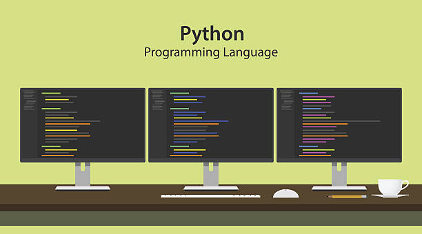

On vous aide à gagner de l'argent !

- Nous sommes trois lycéens de terminale Scientifique en spécialité ISN. En cette année, nos professeurs nous ont enseignés le codage en python ainsi que la création de site internet. Le but était de réaliser le projet de notre choix. Nous nous sommes concertés et avons décidés de réaliser une aide et des conseils pour les paris sportifs.
- Ce projet consiste à donner les statistiques de chaque équipe lors d'un match pour permettre de trouver l'équipe ayant le plus de chance de l'emporter.
- Ces statistiques sont basées sur les matchs précédents.